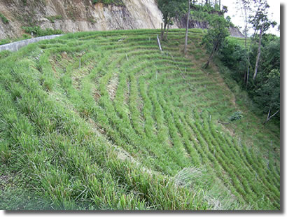

พระบาทสมเด็จพระเจ้าอยู่หัวภูมิพลอดุลยเดช รัชกาลที่ 9 ได้ทรงศึกษาเรื่องการใช้หญ้าแฝกในการอนุรักษ์ดินและน้ำจากเอกสารของธนาคารโลก ที่นาย Richard Grimshaw ได้ทูลเกล้าฯ ถวาย และพระองค์ได้พระราชทานพระราชดำริเกี่ยวกับหญ้าแฝก โดยให้ทรงทดลองปลูกหญ้าแฝกเพื่อป้องกันการพังทลายของดิน จนปัจจุบันมีหน่วยงานกว่า 50 หน่วยงาน ดำเนินงานสนองพระราชดำริการพัฒนาและรณรงค์การใช้หญ้าแฝก ส่งผลให้การดำเนินงานก้าวหน้ามากขึ้นตามลำดับ
พระราชดำริพระบาทสมเด็จพระเจ้าอยู่หัวที่ให้หน่วยงานต่าง ๆ ดำเนินการศึกษาทดลองเกี่ยวกับหญ้าแฝกมีใจความสรุปได้ว่า 1. หญ้าแฝกเป็นพืชที่มีระบบรากลึก แผ่กระจายลงไปในดินตรง ๆ เป็นแผงเหมือนกำแพง ช่วยกรองตะกอนดินและรักษาหน้าดินได้ดี จึงควรนำมาศึกษาทดลองปลูก ให้ทดลองปลูกหญ้าแฝกเพื่อป้องกันการพังทลายของดินในพื้นที่ศูนย์ศึกษาการพัฒนาและพื้นที่อื่น ๆ ที่เหมาะสมอย่างกว้างขวาง 2. การดำเนินการทดลองการปลูกหญ้าแฝก ให้พิจารณาลักษณะของภูมิประเทศ ซึ่งแบ่งตามลักษณะของพื้นที่ดังนี้ ก. การปลูกหญ้าแฝกบนพื้นที่ภูเขา ให้ปลูกหญ้าแฝกตามแนวขวางของความลาดชันและในร่องน้ำของภูเขา เพื่อป้องกันการพังทลายของหน้าดินและช่วยเก็บความชื้นในดินไว้ด้วย ข. การปลูกหญ้าแฝกบนพื้นที่ราบ ให้ดำเนินการในลักษณะดังนี้ - ปลูกโดยรอบแปลง - ปลูกลงในแปลง แปลงละ 1 หรือ 2 แนว - สำหรับแปลงพืชไร่ ให้ปลูกตามร่องสลับกับพืชไร่ ค. การปลูกหญ้าแฝกรอบสระน้ำ เพื่อป้องกันอ่างเก็บน้ำมิให้ตื้นเขินอันเนื่องมาจากตะกอนจากการพังทลายของดิน ตลอดจนช่วยรักษาดินเหนืออ่าง และช่วยให้ป่าไม้ในบริเวณพื้นที่รับน้ำทวีความสมบูรณ์ขี้นอย่างรวดเร็ว ง. การปลูกหญ้าแฝกเหนือบริเวณแหล่งน้ำ ปลูกแฝกเป็นแนวป้องกันตะกอนดินและกรองของเสียต่าง ๆ ที่ไหลลงในแหล่งน้ำทั้งนี้ให้บันทึกภาพก่อนดำเนินการและหลังการดำเนินการไว้เป็นหลักฐาน 3. ผลของการศึกษาทดลอง ควรเก็บข้อมูลทั้งทางด้านการเจริญเติบโตของลำต้นและราก ความสามารถในการอนุรักษ์ความสมบูรณ์ของดินและการเก็บความชื้นในดินและเรื่องพันธุ์หญ้าแฝกต่าง ๆ ด้วยกรมทางหลวงเป็นหน่วยงานหนึ่งที่ให้ความสำคัญของการอนุรักษ์ทรัพยากรดินและน้ำ รวมไปถึงผลกระทบทางด้านสิ่งแวดล้อมอันเนื่องมาจากการชะล้างพังทลายของดินเชิงลาดถนน ได้ร่วมในโครงการพัฒนาและรณรงค์การใช้หญ้าแฝกอันเนื่องมาจากพระราชดำริ โดยได้กำหนดเป็นนโยบายให้หน่วยงานด้านบำรุงทางและก่อสร้างทาง โดยเฉพาะทางหลวงที่ตัดใหม่ดำเนินการปลูกหญ้าแฝกเพื่อป้องกันการชะล้างพังทลายของดินลาดคันทางและลาดเหนือคันทางในสายทางต่าง ๆ พร้อมทั้งส่งเสริมแผยแพร่ข้อมูลเทคนิควิชาการเกี่ยวกับหญ้าแฝกแก่หน่วยงานในส่วนภูมิภาค และจัดทำวิดีทัศน์โครงการปลูกหญ้าแฝกเกี่ยวกับการประยุกต์ เทคนิควิธีการปลูกหญ้าแฝกในงานทาง
พื้นที่เป้าหมายใการดำเนินการปลูกหญ้าแฝกของกรมทางหลวงคือ เชิงลาดดินตัดเหนือคันทาง (Back Slope) เชิงลาดดินถมคันทาง (Side Slope) ที่สูงและมีแนวโน้มที่จะเกิดการชะล้างพังทลายของดิน สำหรับสายทางในพื้นที่ ภูเขา ภาคเหนือ ภาคใต้ และภาคตะวันออกเฉียงเหนือ ซึ่งส่วนใหญ่ปกคลุมด้วยดินทรายที่สลายตัวมาจากหินแกรนิตและหินทราย เป็นพื้นที่เป้าหมายเพื่อป้องกันการชะล้างพังทลายของดินและการอนุรักษ์ดิน
การปลูกหญ้าแฝกบริเวณเชิงลาดทางมีอยู่ 2 ลักษณะ ขึ้นอยู่กับสภาพความรุนแรงหรือแนวโน้มของการจะเกิดการชะล้างพังทลายของเชิงลาดทางคือ 1. การปลูกในพื้นที่เชิงลาดที่มีแนวโน้มของการเกิดการชะล้างพังทลายของดินต่ำ การปลูกหญ้าแฝกในพื้นที่เชิงลาดนี้เป็นรูปแบบการปลูกโดยทั่วไปมีลักษณะการปลูกหญ้าแฝกเป็นแถวขวางแนวลาดเท โดยมีระยะห่างระหว่างกอกล้าแฝกในแถวอยู่ในช่วง 10 เซนติเมตร และมีระยะห่างระหว่างแถวที่ปลูกตามแนวลาดเท ประมาณ 1.00 เมตร 2. การปลูกในพื้นที่เชิงลาดที่ได้เกิดการชะล้างพังทลายหรือมีแนวโน้มของการเกิดการชะล้างพังทลายของดินสูง การปลูกหญ้าแฝกในพื้นที่ลักษณะนี้เพื่อลดหรือป้องกันไม่ให้การพังทลายของดินเกิดลุกลามขยายตัวรุนแรงขึ้น หรือเป็นการปลูกในงานก่อสร้างแก้ไขการเคลื่อนตัวของดิน ลักษณะการปลูกจะลดระยะห่างระหว่างกอกล้าแฝกในแถวเป็น 5 เซนติเมตร และมีระยะห่างระหว่างแถวที่ปลูกตามแนวลาดเทประมาณ 50 เซนติเมตร

การปลูกหญ้าแฝกป้องกันการชะล้างพังทลายและเพิ่มเสถียรภาพเชิงลาดทาง ทางหลวงหมายเลข 3272 ตอน บ.ไร่ – ปิล๊อก (อ.ทองผาภูมิ) กม. 15+325 – 15+510
https://www.doh.go.th/content/page/page/8034h